Lecture 16 · 59 slides
Diffusion language models: write the whole answer at once, then sharpen it.
Every language model so far in the course writes left to right,
one token per forward pass. Diffusion models, which took over
image generation, work differently. They learn to undo a
gradual corruption, so they can start from pure noise and clean
up every position in parallel over a handful of steps. This
lecture asks how that idea carries over to text, where you
cannot add "a little noise" to a word. It covers noise in
embedding space (Diffusion-LM), noise as [MASK] tokens (D3PM,
MDLM, LLaDA), a fast commercial model (Mercury), and two recent
ways of using a small diffusion model to speed up an ordinary
autoregressive one (DFlash, DSpark).
Lecture 16
59 slides
Manish Shrivastava · Aparajitha
§0The deck at a glance
Slides 1–12 survey generative models (autoencoders, VAEs, GANs,
autoregressive LMs) and list what each one is bad at, which
sets up the gaps diffusion is meant to fill. Slides 13–20
explain diffusion on images. A fixed forward process slowly
turns data into noise, and a network learns to reverse it one
step at a time. Slides 21–24 raise the central problem of the
lecture, that text is discrete, and split the solutions into
continuous ones (add noise to vectors) and discrete ones
(corrupt tokens). Slides 25–34 cover the continuous route,
ending with Diffusion-LM. Slides 35–44 cover the discrete
route, from transition matrices and D3PM to masked diffusion
(MDLM) and the 8B-scale LLaDA. Slides 45–48 show Mercury's
speed and benchmark numbers. Slides 49–53 weigh diffusion
against autoregressive models, and slides 54–59 end with
DFlash and DSpark, which use diffusion as the draft model in
speculative decoding.
The idea to hold on to is that the masked diffusion LM is a
BERT-style masked language model trained at every
masking ratio from 0% to 100%. Training it is just "hide some
tokens, predict them". Generating with it means starting from
an all-[MASK] answer and repeatedly filling in the positions
the model is surest about. Almost everything else in the
second half of the lecture is a variation on that loop.
§1Generative models before diffusion
A quick tour of the older generative models, mostly to collect
their weaknesses. Each weakness reappears later as a reason to
try diffusion.
Slide 01 / 59
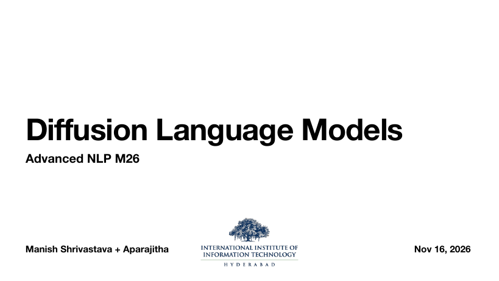
slide 01 · title
On the slide
Lecture 16, given on 16 November 2026. The topic is language models that generate text by
diffusion instead of left-to-right prediction.
Where this fits
Lectures 10 and 11 treated generation as a fixed loop of one token per forward pass and then tried to
make that loop cheaper (better sampling, speculative decoding). Lectures 14 and 15 changed the
architecture inside the loop. This lecture changes the loop itself.
Slide 02 / 59
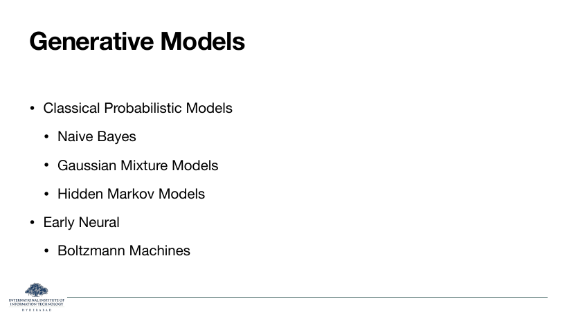
slide 02 · classical generative models
On the slide
Classical generative models (Naive Bayes, Gaussian mixtures, HMMs) and early neural ones
(Boltzmann machines).
Slide 03 / 59
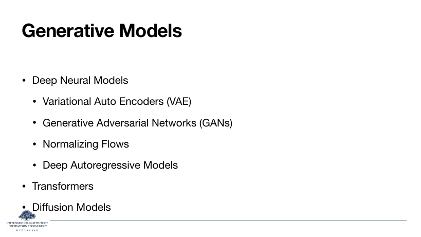
slide 03 · deep generative models
On the slide
The deep families are VAEs, GANs, normalizing flows, autoregressive models, transformers and
diffusion models.
What "generative" means here
A generative model learns a probability distribution over data, p(x), well enough to
draw new samples from it. Naive Bayes and HMMs already do this for text (an HMM can generate a tag
sequence and then words). The deep families differ mainly in how they make sampling possible.
A GPT-style model, for example, is a "deep autoregressive model" that factorizes p(x)
into next-token probabilities.
Slide 04 / 59
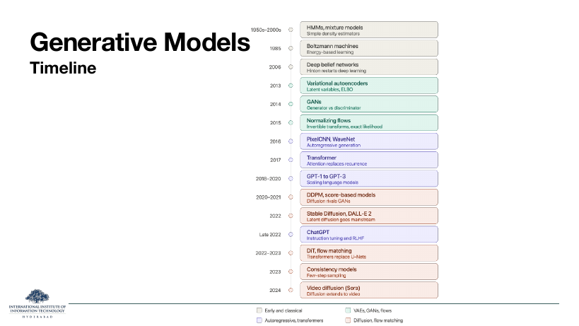
slide 04 · timeline
On the slide
A timeline from HMMs to video diffusion. Diffusion-type models (orange) take over image generation
from about 2020.
Slide 05 / 59
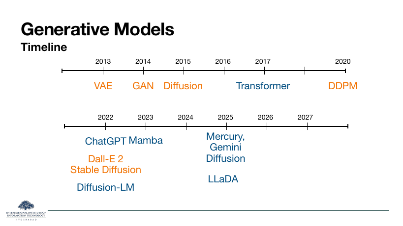
slide 05 · where text diffusion appears
On the slide
The same story with text diffusion added. Diffusion-LM appears in 2022, then Mercury, Gemini Diffusion and
LLaDA around 2025.
Reading the timeline
Diffusion was proposed in 2015 but only worked well on images after DDPM in 2020. Text lagged by a few
more years because of the discreteness problem in §3. The models this lecture ends on (MDLM, LLaDA,
Mercury) are all from 2024 onward.
Slide 06 / 59
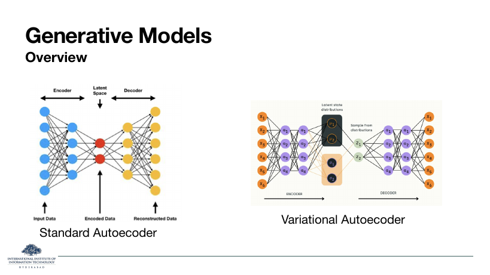
slide 06 · autoencoder vs VAE
On the slide
A standard autoencoder squeezes the input into a small latent vector and reconstructs it. A VAE has
the encoder output a distribution (a mean and a spread for each latent dimension), samples from it, and
decodes the sample.
Why the difference matters for generation
To generate, you want to pick a random latent and decode it. A plain autoencoder never
promised anything about latents it did not see in training, so a random point usually decodes to junk.
A VAE forces the encoder's distributions to stay close to a standard Gaussian, so random Gaussian
samples land in regions the decoder knows how to handle.
Slide 07 / 59
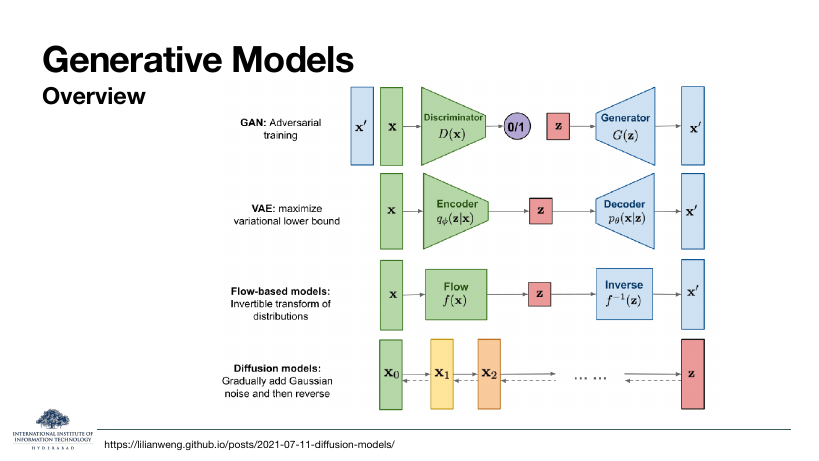
slide 07 · four families in one picture
On the slide
The four families side by side. Each one connects data x to a simple random variable
z in a different way.
One way to compare them
- GAN. A generator maps z to an image, and a second network (the
discriminator) is trained to tell fakes from real data. No encoder, no likelihood.
- VAE. A learned encoder and decoder, trained by maximizing a lower bound on the
likelihood (the ELBO).
- Flow. One invertible function f, so the same network maps both ways and
the likelihood is exact.
- Diffusion. The "encoder" is not learned at all. It is a fixed recipe that adds a
bit of noise many times. Only the way back is learned, and it is learned as many small steps rather
than one big jump.
Slide 08 / 59
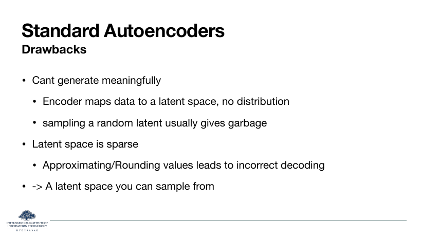
slide 08 · autoencoder drawbacks
On the slide
An autoencoder's latent space has no distribution attached, so random latents decode to garbage, and
its training points are scattered sparsely, so even small rounding moves you off them. The fix
wanted is a latent space you can sample from.
→ Comes back later
"Rounding a vector leads to incorrect decoding" is exactly the problem continuous text diffusion
hits in slides 28 and 31, where the denoised vector has to be snapped back to a real word.
Slide 09 / 59
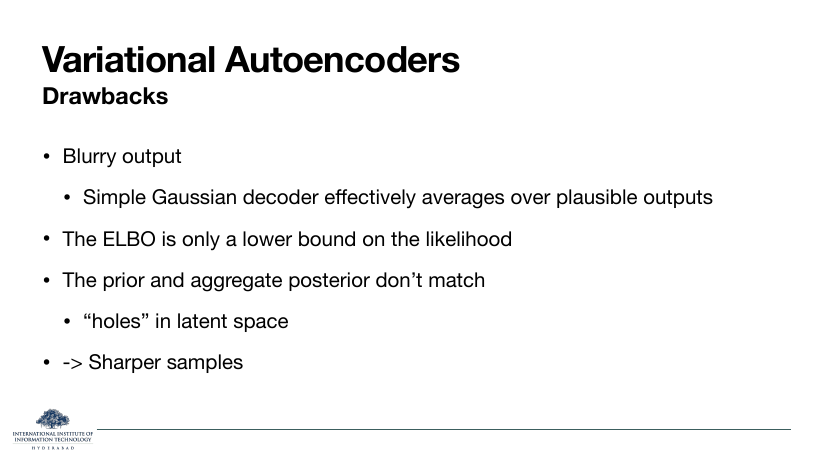
slide 09 · VAE drawbacks
On the slide
VAEs give blurry samples, optimize only a lower bound on the likelihood, and still have "holes" in
latent space where the decoder was never trained.
Why a Gaussian decoder blurs
Suppose one latent could equally well be a handwritten "1" or a "7". A Gaussian decoder is trained
with squared error, and the output that minimizes expected squared error over two equally likely
targets is their pixel-wise average. Half a 1 overlaid on half a 7 is a smudge. The model is not
wrong on average, it just has no way to commit to one sharp answer.
Slide 10 / 59
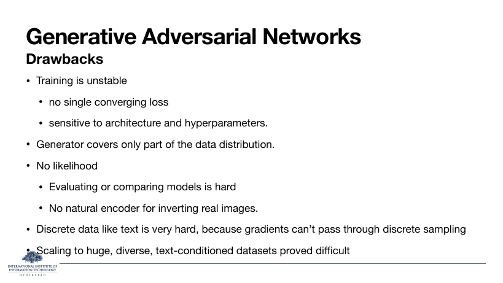
slide 10 · GAN drawbacks
On the slide
GANs are unstable to train, tend to cover only part of the data (mode collapse), give no likelihood,
struggle with text and were hard to scale.
Why text in particular breaks GANs
The generator learns from the gradient of the discriminator's score with respect to the generator's
output. For an image, nudging a pixel by 0.01 changes the score smoothly. For text, the generator's
output is a token chosen by sampling or argmax, and there is no "0.01 of a different word". The
gradient of the score with respect to that discrete choice is zero almost everywhere, so the generator
gets no learning signal. Text diffusion has to solve the same discreteness problem in §3.
Slide 11 / 59
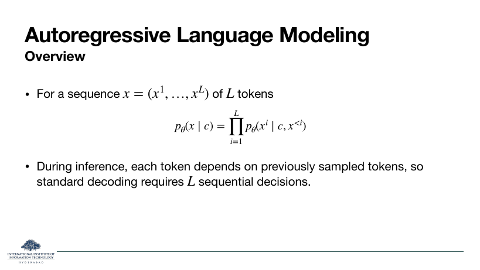
slide 11 · the autoregressive factorization
On the slide
The probability of a sequence given a prompt c is a product of next-token probabilities. To
sample, you have to pick token 1 before you can compute the distribution for token 2, so an
L-token answer takes L sequential steps.
The number to compare against
A 500-token answer costs 500 forward passes of the full model, one after another, no matter how
many GPUs you have. Lecture 11 explained that each pass is memory-bandwidth bound. Diffusion's main
selling point is that it replaces "L passes" with "T passes", where the number of
denoising steps T can be much smaller than L.
Slide 12 / 59
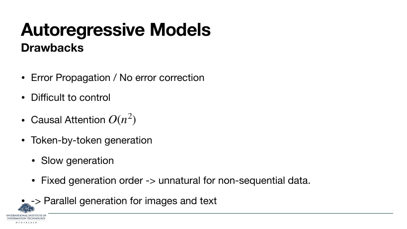
slide 12 · autoregressive drawbacks
On the slide
Autoregressive models cannot fix earlier mistakes, are hard to steer, pay quadratic attention cost,
and are slow and locked into left-to-right order.
The two drawbacks that matter most here
No error correction. Once a token is sampled it is part of the context forever.
If the model writes "The capital of Australia is Sydney", every later token has to live with "Sydney".
Fixed order. Some content is easier to write out of order. To fill a code template
you might want to write the function signature and the return statement first and the body last. A
left-to-right model has to commit to the first line before it has "seen" the last.
§2What diffusion is
Diffusion on images, the setting where it was developed. Destroy
an image with many small doses of noise using a fixed rule, and
train a network to undo one dose at a time.
Slide 13 / 59
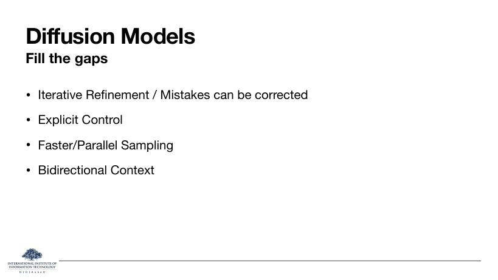
slide 13 · what diffusion promises
On the slide
The four things diffusion offers, each the answer to a drawback from slide 12.
| Autoregressive problem (slide 12) | Diffusion answer |
|---|
| No error correction | Every step revisits the whole output, so a bad guess can be
changed later |
| Hard to control | A constraint can be applied to the whole sequence at every step |
| Token-by-token, slow | All positions are updated in parallel |
| Only left context | Every position sees both sides |
Slide 14 / 59
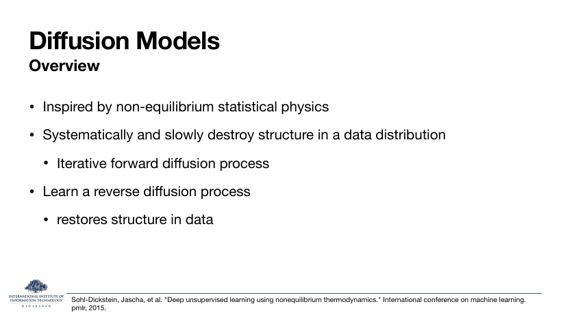
slide 14 · destroy, then learn to restore
On the slide
The 2015 idea from physics is to slowly destroy the structure in data with a forward process, then learn
a reverse process that restores it.
Slide 15 / 59
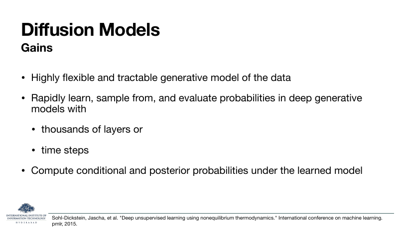
slide 15 · why it was attractive
On the slide
The original paper claimed the model is flexible yet tractable, can have thousands of steps, and
lets you compute conditional probabilities.
Why many small steps are easier than one big one
Mapping pure noise to a photo in one shot is what a GAN generator tries to do, and it is hard. Removing
a tiny bit of noise from an almost-clean photo is easy, because the answer is very close to the input.
Diffusion breaks the hard problem into a long chain of easy ones and trains one network to do all of
them, with the step number t given as an extra input so the network knows how noisy its input
is. "Tractable" on slide 15 means each small step has a simple form (a Gaussian for images) that you can
write down and train with an ordinary loss.
Slide 16 / 59
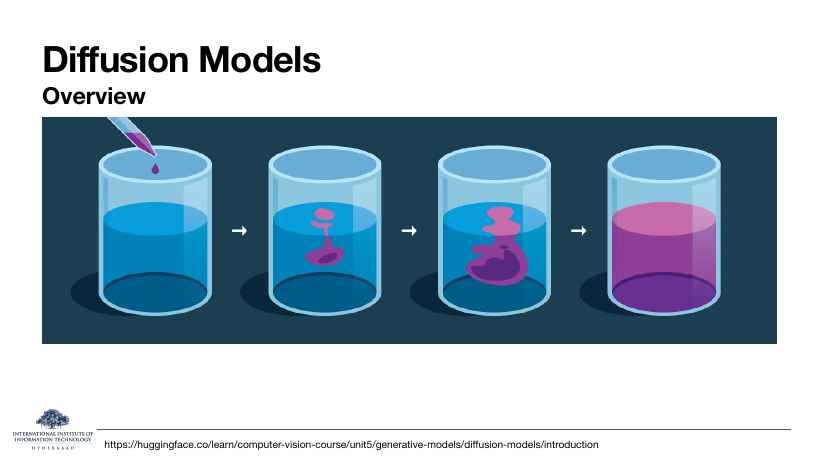
slide 16 · ink in water
On the slide
A drop of ink spreading through water until the whole glass is one uniform colour.
Slide 17 / 59
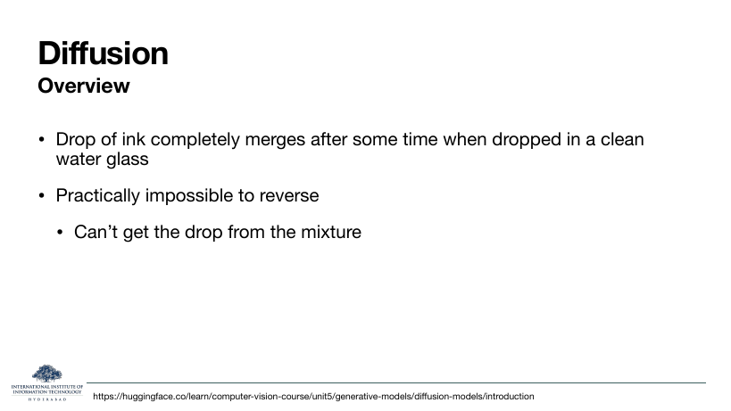
slide 17 · easy forward, hard backward
On the slide
The forward direction happens on its own. Reversing it, getting the drop back from the mixture, is
practically impossible.
What the analogy is for
The end state of the glass is the same no matter where the drop started. That is the property diffusion
needs. After enough noise, every image looks like the same featureless static, so at generation time you
can start from fresh static without knowing which image it "came from". The reverse direction is
impossible for the physical glass, but a neural network can learn a probabilistic version of
it. Given this slightly mixed glass, what did it most likely look like one moment earlier?
Slide 18 / 59
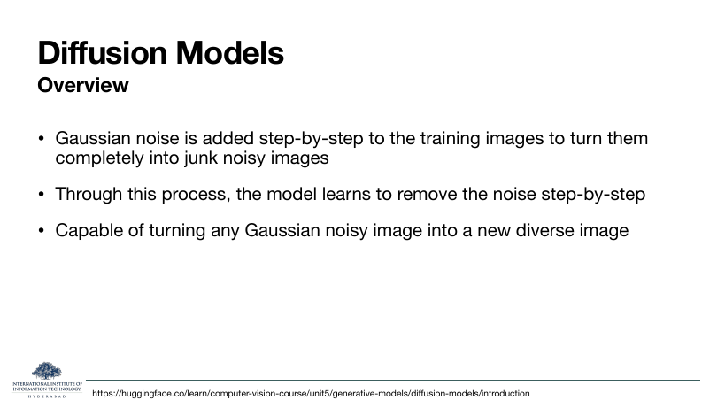
slide 18 · noise in, image out
On the slide
Training adds Gaussian noise step by step until an image is pure noise, and the model learns to
remove it step by step. At generation time any fresh noise image can be turned into a new image.
Why the outputs are diverse
Different starting noise leads to different images, and most samplers add a little fresh noise at
every reverse step too. So the same model gives many different outputs, the way sampling with a
temperature does for an LM.
Slide 19 / 59
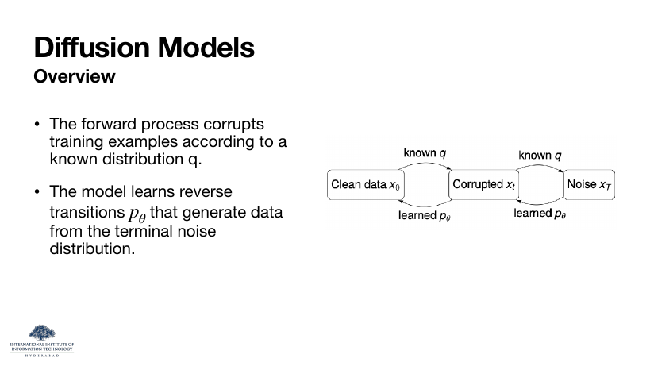
slide 19 · q forward, pθ backward
On the slide
Two processes over a chain x0 (clean) → xt → xT
(pure noise). The forward one, q, is fixed and known. The reverse one, pθ,
is the neural network.
How training uses this
- Take a clean training example x0.
- Pick a random step t and corrupt x0 to xt with
q. For the processes used in practice you can jump straight to step t without
running the steps in between.
- Ask the network to predict the clean data (or the noise that was added) from xt
and t. Since you made the corruption yourself, you know the right answer, so this is plain
supervised learning.
✦ Key takeaway
Diffusion training needs no adversary and no learned encoder. You corrupt data with a rule you
chose and train a network to undo the corruption. Every model in this lecture is trained this way.
Only the choice of corruption changes.
Slide 20 / 59
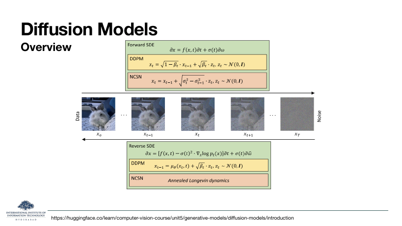
slide 20 · the image diffusion equations
On the slide
The same picture in equations. The top box is the forward noising, written as a continuous-time
stochastic differential equation (SDE) and as its two common discrete versions, DDPM and NCSN. The
bottom box is the matching reverse process.
The DDPM forward step with numbers
Take one pixel with value 0.8 and a noise level βt = 0.02. Then
√0.98 ≈ 0.990 and √0.02 ≈ 0.141, so
xt ≈ 0.792 + 0.141 z.
The signal shrinks a little and a little noise is added. The two square roots are chosen so that if
xt−1 has variance 1, so does xt, since
(1 − β) · 1 + β · 1 = 1. Repeat this a thousand times and the original 0.8 has shrunk to almost
nothing while the noise has taken over, which is the "pure noise" end of the chain.
The reverse step
The DDPM reverse step is xt−1 = μθ(xt,
t) + √βt z. The network predicts where the slightly cleaner
image is centred, and a bit of fresh noise is added back. You only need the intuition here. The
rest of the lecture swaps Gaussian noise for something that works on words.
§3Diffusion meets text
Gaussian noise needs numbers that can move a little. Words cannot.
These slides lay out the two ways around that.
Slide 21 / 59
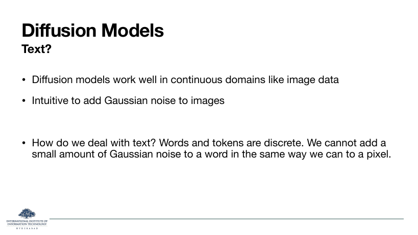
slide 21 · the discreteness problem
On the slide
Images are continuous, so Gaussian noise is natural. Tokens are discrete, so "a word plus a little
noise" has no meaning.
Make it concrete
A pixel of 0.8 plus noise 0.03 is 0.83, which is still a valid, slightly different pixel. Token id
4821 ("cat") plus 0.03 is 4821.03, which is not a token. Rounding gives back "cat", so the noise did
nothing, and adding a large amount jumps to some unrelated id like 9134 ("tax"), because neighbouring
ids have no relationship in meaning. There is no smooth path from "cat" to noise.
Slide 22 / 59
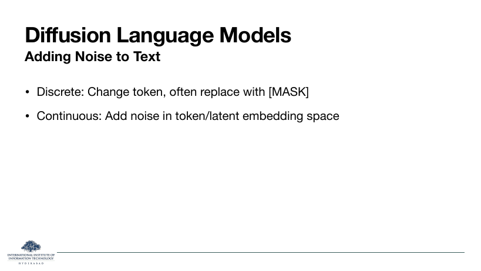
slide 22 · two ways to add noise to text
On the slide
Either corrupt tokens directly (usually by turning them into [MASK]) or move to a continuous space
(embeddings) and add Gaussian noise there.
Slide 23 / 59
![Diffusion Language Models: Continuous and Discrete Diffusion. Table with columns Choice, Discrete diffusion, Continuous diffusion. State: tokens and special symbols vs real-valued vectors. Corruption: mask or replace tokens vs add Gaussian noise. Prediction: categorical probabilities vs noise, clean vectors, or score. Text output: token states are already discrete vs requires a token decoder. Note: The state space can be discrete even when diffusion time is continuous, as in the masking process used by LLaDA.](../assets/slides/L16-diffusion-lms/slide-23.png)
slide 23 · continuous vs discrete, side by side
On the slide
A comparison table. Discrete diffusion keeps tokens as tokens and predicts a probability over the
vocabulary. Continuous diffusion works on vectors and needs a final step to turn vectors back into
words.
The practical difference
The "Text output" row decides a lot. In discrete diffusion the network's output is a softmax over the
vocabulary at each position, exactly like the output head of BERT or GPT, so you train it with
cross-entropy and read off words directly. In continuous diffusion the output is a vector, and you need
an extra rounding or decoding step, which §4 shows is where things go wrong.
⚠ Watch out
"Discrete" refers to the state (what each position holds), not to time. LLaDA corrupts
with a masking ratio t that can be any real number in [0, 1], yet each position is always
either its original token or [MASK].
Slide 24 / 59
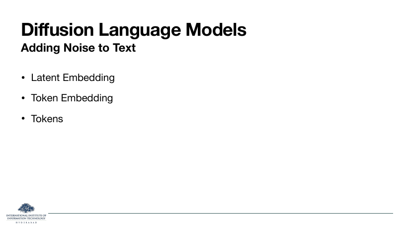
slide 24 · three places to put the noise
On the slide
Noise can be added at three levels, namely a latent embedding of the whole text, the per-token
embeddings, or the tokens themselves. The next slides go through them in this order.
The first two are continuous (§4). The third is discrete (§5 and §6).
§4Continuous text diffusion
Turn text into vectors, run image-style Gaussian diffusion on the
vectors, then turn the result back into text. The trouble is in
the last step.
Slide 25 / 59
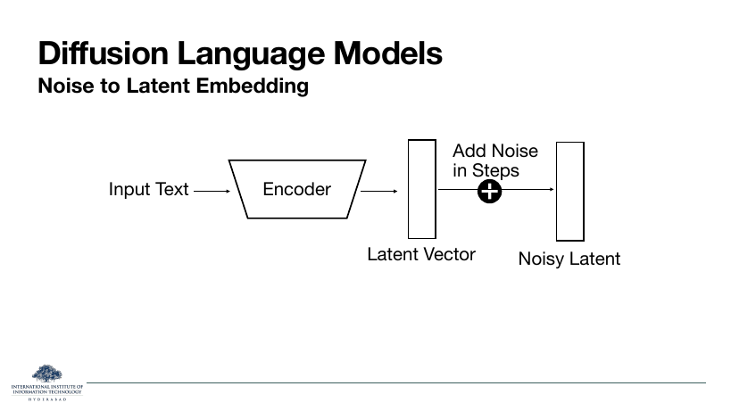
slide 25 · latent route, forward
On the slide
An encoder compresses the text into a latent vector, and noise is added to that vector in steps.
Slide 26 / 59
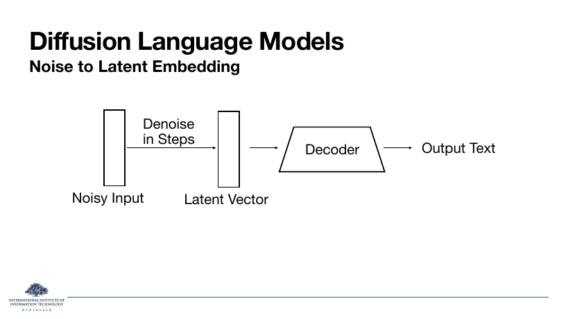
slide 26 · latent route, backward
On the slide
Generation runs the other way. Denoise a random vector step by step into a clean latent, then a
decoder turns the latent into text.
How this is the image recipe in disguise
This is the same move Stable Diffusion makes for images, which do diffusion in a compact latent space instead
of on raw pixels. The diffusion model never sees words. It only learns to generate latent vectors that
look like those produced by the encoder, and a separate decoder does the language part.
Slide 27 / 59
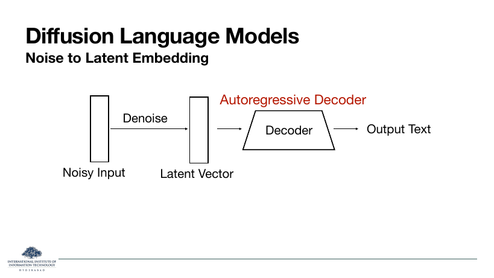
slide 27 · the decoder is autoregressive
On the slide
The same pipeline, with the decoder marked in red as autoregressive.
Why that is a catch
Turning one latent vector into a sentence of variable length is itself a sequence generation problem,
and the usual way to solve it is a left-to-right decoder. So the final text is still written one token
at a time. You keep the slow loop you wanted to get rid of, and add a diffusion model in front of
it.
Slide 28 / 59
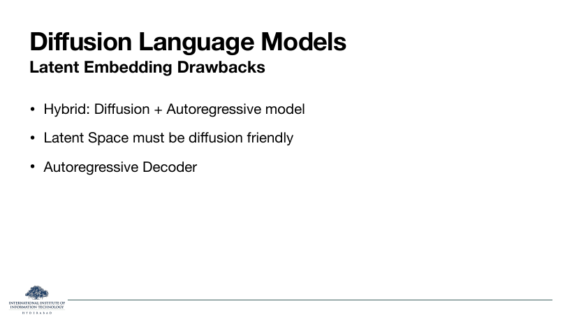
slide 28 · latent route drawbacks
On the slide
The latent route is a hybrid that still uses an autoregressive decoder, and it only works if the
latent space is "diffusion friendly".
What "diffusion friendly" means
Diffusion ends by producing a latent that is close to, but not exactly, one the encoder would make.
The decoder must turn such near-miss latents into sensible text. This is the autoencoder problem from
slide 8 again. If the encoder's latents are scattered sparsely, a vector slightly off any of them may
decode to nonsense, so the latent space has to be smooth for the whole thing to work.
Slide 29 / 59
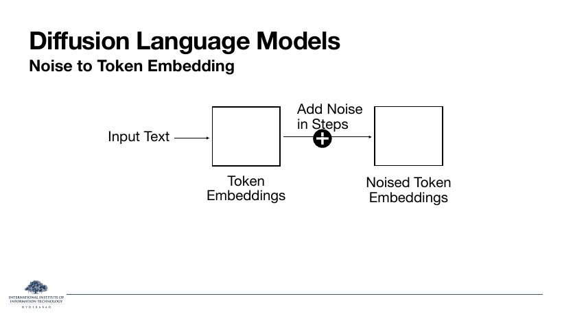
slide 29 · token-embedding route, forward
On the slide
Look up each token's embedding vector and add Gaussian noise to the whole sequence of vectors.
Slide 30 / 59
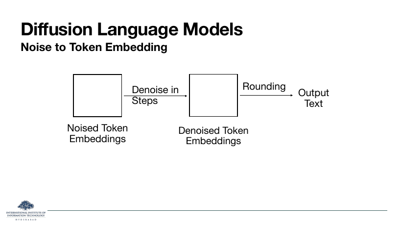
slide 30 · token-embedding route, backward
On the slide
Denoise the sequence of vectors, then round each one to the nearest word embedding to get text.
What changed from the latent route
Now there is one vector per position, so the output length is fixed by the number of vectors
and every position is denoised in parallel. No autoregressive decoder is needed. The last step is a
nearest-neighbour lookup that finds, for each position, the vocabulary word whose embedding is closest to the
denoised vector.
Slide 31 / 59
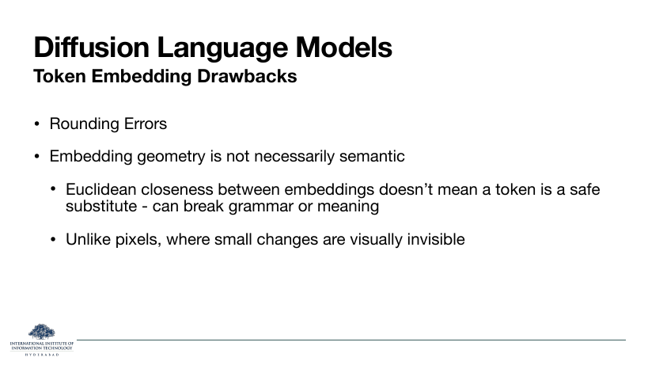
slide 31 · rounding and geometry
On the slide
Rounding can pick the wrong word, and being close in embedding space does not make two words
interchangeable.
A small example
Imagine a 2-D embedding space with "hot" at (1.0, 0.0) and "cold" at (0.9, 0.2). Words that appear
in the same contexts ("the soup is ___") get similar embeddings, so antonyms often end up close
together. Suppose denoising ends at (0.93, 0.12). The distances are
- to "hot": √(0.07² + 0.12²) = √0.0193 ≈ 0.139
- to "cold": √(0.03² + 0.08²) = √0.0073 ≈ 0.085
Rounding picks "cold". The vector was a small error away from "hot", but the meaning of the sentence
flips. For an image, an error of 0.05 in a pixel is invisible. For text, the same size of error can
change a word, and a single wrong word can break the grammar or reverse the meaning.
Slide 32 / 59
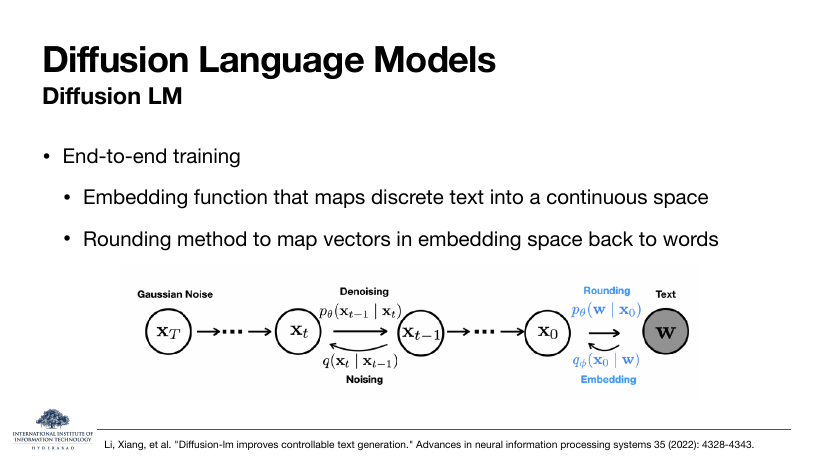
slide 32 · Diffusion-LM
On the slide
Diffusion-LM (Li et al., 2022) follows the token-embedding route but trains the embedding and the
rounding step together with the denoiser. The chain gains one link at each end, going from
text w → embedding x0 (via qφ) and
x0 → text (via pθ(w | x0)).
Why learn the embeddings end to end
With frozen embeddings (say, taken from GPT-2) you are stuck with whatever geometry they have, like
"hot" next to "cold" above. When the embeddings are trained with the diffusion loss, the model is
rewarded for placing words so that denoised vectors round to the right word. It can push apart words
that it keeps confusing. The rounding step pθ(w | x0)
is a softmax over the vocabulary at each position, trained with cross-entropy.
Slide 33 / 59
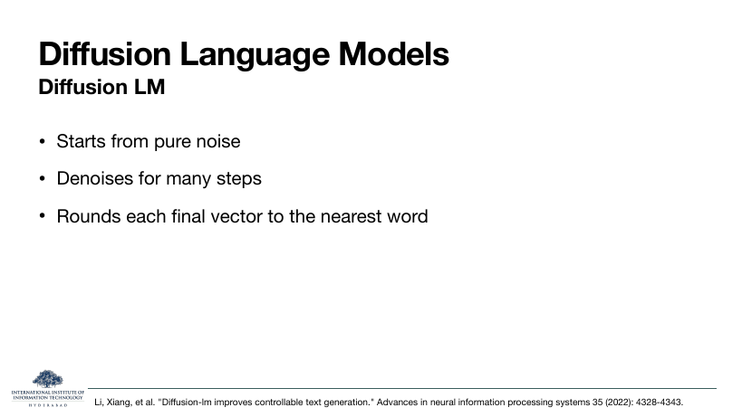
slide 33 · how Diffusion-LM generates
On the slide
Generation has three steps. Sample one Gaussian vector per position, denoise for many steps, round
each vector to its nearest word.
"Many steps" is the catch. Diffusion-LM used thousands of denoising steps, so even though each
step handles all positions in parallel, generation was not faster than an autoregressive model.
Slide 34 / 59
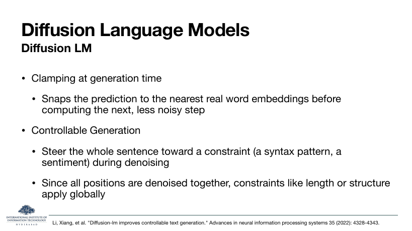
slide 34 · clamping and control
On the slide
Two tricks. Clamping snaps the model's prediction to the nearest real word embedding
at each step, not only at the end. Control nudges the whole sentence towards a target
property during denoising.
Why clamping helps
Without clamping, the vectors can drift through the empty space between words for many steps and
only get snapped at the very end, where a small error flips a word (slide 31). Clamping keeps
every intermediate prediction on a real word, so small errors are corrected early instead of piling
up.
Why control is easier than in an autoregressive model
Say you want a sentence with a given syntax pattern, or a positive sentiment. A separate classifier
can score the current noisy vectors, and its gradient tells you how to move all of them to
raise the score. You add that nudge at each denoising step. An autoregressive model can only steer
the next token, with no say over tokens already written and no view of tokens still to come. A
constraint like "exactly 10 words" or "the sentence must end with a question" is hard to enforce left
to right, but trivial when all positions exist from the start.
§5Discrete diffusion
Skip the vectors. Corrupt the tokens themselves, by replacing them
with random tokens or with [MASK]. Then the model predicts tokens
directly and there is nothing to round.
Slide 35 / 59
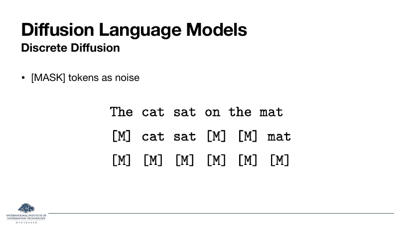
slide 35 · [MASK] as noise
On the slide
"The cat sat on the mat" becomes partly masked, then fully masked. Masking plays the role that
Gaussian noise played for images.
The analogy to images
| Image diffusion | Masked text diffusion |
|---|
| Clean data | Photo | The cat sat on the mat |
| Partly noisy | Photo with some static | [M] cat sat [M] [M] mat |
| Pure noise | Static | [M] [M] [M] [M] [M] [M] |
| One reverse step | Remove a little static | Fill in some of the [M]s |
As with the ink in water, the fully noised state is the same for every sentence of length 6, so
generation can always start from it.
Slide 36 / 59
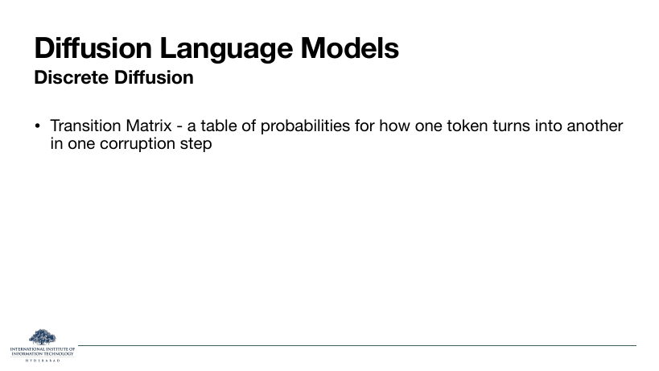
slide 36 · the transition matrix
On the slide
The discrete forward process is described by a transition matrix Qt. Entry
[Qt]ij is the probability that a token in state i becomes state
j in one corruption step.
A tiny example
With a three-word vocabulary {cat, dog, [MASK]}, one possible Q is
| from \ to | cat | dog | [MASK] |
|---|
| cat | 0.9 | 0 | 0.1 |
| dog | 0 | 0.9 | 0.1 |
| [MASK] | 0 | 0 | 1 |
Each row sums to 1 because a token has to end up somewhere. This matrix says that every step, a real
word has a 10% chance of being masked, and a mask stays a mask. It is the discrete counterpart of
DDPM's "shrink the signal a bit, add a bit of noise".
Slide 37 / 59
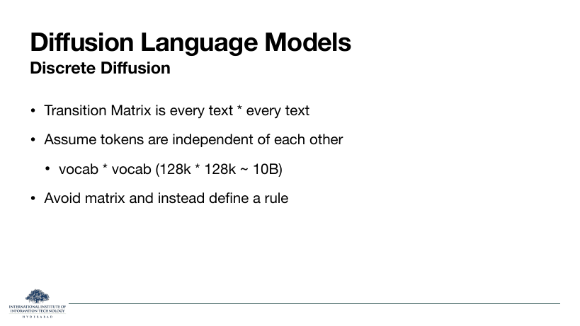
slide 37 · the matrix is too big
On the slide
A transition matrix over whole texts is impossibly large. Corrupting each token independently brings
it down to vocabulary × vocabulary, which is still huge, so in practice you define a simple rule
instead of storing a matrix.
The sizes
- Over whole texts. A 6-token sequence with a 128k vocabulary has 128,0006
≈ 4 × 1030 possible states. A matrix over those is out of the question.
- Per token. If each position is corrupted independently, the same
V × V matrix is applied at every position. With V = 128,000 that is
128,000² ≈ 1.6 × 1010 entries (the slide rounds to "~10B"), or about 65 GB in FP32. Still
far too big to store, and you would need one per step.
- As a rule. If the matrix has a fixed pattern, such as "stay with probability
1 − β, otherwise go to [MASK]", you only store β. The next two slides give two such rules.
Slide 38 / 59
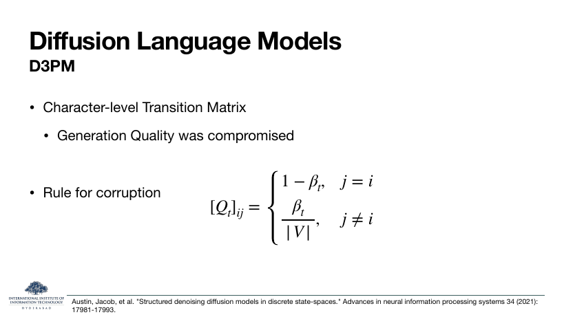
slide 38 · D3PM uniform noise
On the slide
D3PM (Austin et al., 2021) uses a rule where each token stays the same with probability 1 − βt
and otherwise turns into a uniformly random token. It was tried at the character level, and quality
suffered.
Why uniform noise is hard for the model
Take "The cat sat" and corrupt "cat" into a random token, say "tax". The model now sees "The tax sat"
and has to decide, for every position, whether the token there is real or a random
replacement. Corrupted positions look like ordinary words, so the model must spend effort finding them
before it can fix them. With [MASK] (next slide) the corrupted positions announce themselves.
⚠ Watch out
Written exactly as on the slide, a row does not quite sum to 1. With |V| = 4 and β = 0.2,
the diagonal is 0.8 and the three off-diagonal entries are 0.2 / 4 = 0.05 each, for a total of
0.95. In the D3PM paper the uniform jump can also land back on the same token, so the diagonal is
1 − β + β/|V| = 0.85, and the row sums to 0.85 + 0.15 = 1. For a 128k vocabulary the
difference is negligible, but use the corrected form if asked to check that rows sum to 1.
Slide 39 / 59
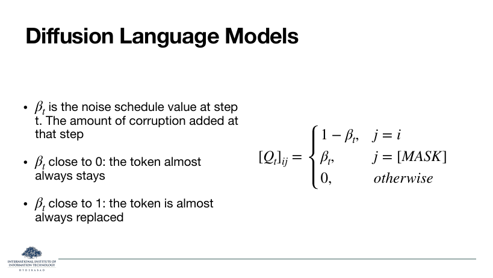
slide 39 · the absorbing [MASK] rule
On the slide
Each step, a token stays with probability 1 − βt or becomes [MASK] with probability
βt. It never turns into another word. βt is the noise schedule.
Running it forward
Once a token is masked, it stays masked (the [MASK] row is all zeros except a 1 on [MASK] itself),
which is why this is called absorbing noise. So a token is still visible at step t
only if it survived every step so far. With a constant β = 0.1,
P(still visible after 5 steps) = 0.95 ≈ 0.59.
For "The cat sat on the mat", you expect about 6 × 0.41 ≈ 2.5 of the 6 tokens to be masked after 5
steps, something like "[M] cat sat [M] [M] mat" from slide 35. Keep going and the survival probability
heads to 0, giving all [MASK].
✦ Key takeaway
Because masked tokens never turn into other words, a visible token in a noisy sentence is always
correct. The model's only job is to fill the blanks, which is exactly the masked language modelling
task BERT was trained on. That is why absorbing noise beat uniform noise and became the standard
for text.
§6Masked diffusion: MDLM and LLaDA
With absorbing [MASK] noise, training reduces to masked language
modelling at a random masking ratio, and generation reduces to
filling in masks a few at a time. MDLM showed this works.
LLaDA scaled it to an 8B chat model.
Slide 40 / 59
![Diffusion Language Models: Masked Diffusion Language Model (MDLM). Left: Diffusion training, average of unmasking losses. Input x: Masked diffusion for discrete data. Stack of masked versions from t=0 to t=1; MDLM: expectation over masking rates. A network theta predicts x_theta^1 to x_theta^L, losses only on masked positions. Right: Simplified Masked Diffusion LM. Masking rate is random, not fixed. Objective is a variational lower bound. Admits fast ancestral sampling. Objective is a simple average of MLM losses. Improved implementation relative to previous masked diffusion. Bar chart of LM1B perplexity: Diffusion LM 118.6, D3PM 76.9, Diffusion BERT 63.8, SEDD 32.8, MDLM 23.0; dashed AR line at 20.9. Citation Sahoo et al. 2024.](../assets/slides/L16-diffusion-lms/slide-40.png)
slide 40 · MDLM
On the slide
MDLM (Sahoo et al., 2024) trains a transformer to predict masked tokens, where the masking rate is
drawn at random for each example instead of being fixed at BERT's 15%. The loss is an average of
these masked-LM losses over masking rates, and it is a bound on the log-likelihood. On LM1B its
perplexity (23.0) is close to an autoregressive model's (20.9) and far better than earlier text
diffusion models.
One training step, by hand
Take x = "Masked diffusion for discrete data" (L = 5).
- Draw a masking rate, say t = 0.4.
- Mask each token independently with probability 0.4. Suppose this gives
"[M] diffusion for [M] data".
- Run the transformer (with full bidirectional attention) and read off its softmax at the two masked
positions. Say it gives the right word "Masked" probability 0.5 and "discrete" probability 0.25.
- The loss is cross-entropy on the masked positions only, so it is −ln 0.5 − ln 0.25 ≈ 0.693 + 1.386 = 2.079.
Positions that were visible contribute nothing, since the model can just copy them.
Next example, next random t. Over training the model sees every masking ratio from almost
nothing hidden to everything hidden, which is the "expectation over masking rates" on the left of the
slide.
The weighting that makes it a likelihood bound
In the bound, each example's loss is multiplied by 1/t (for the linear masking schedule, as in
LLaDA). The reason is easy to see. At t = 0.1 only about 10% of tokens are masked, so the
raw loss is a sum over very few positions. Dividing by t scales it back up. The expected
number of masked tokens is tL, and tL × 1/t = L, so every masking
rate contributes on the same scale. That is the "simple average of MLM losses" in the slide's
right-hand box.
Reading the bar chart
Lower perplexity is better. Diffusion-LM (continuous, §4) is at 118.6, D3PM (uniform discrete noise)
at 76.9, and MDLM at 23.0, almost on the autoregressive line at 20.9. Most of that improvement came from
choosing absorbing [MASK] noise and a clean training objective, not from a bigger model.
⚠ Watch out
The diffusion numbers are upper bounds on perplexity (they come from the likelihood bound), while
the AR number is exact. So the true gap may be smaller than 23.0 vs 20.9 suggests, but the chart
cannot show that.
Slide 41 / 59
![LLaDA (Large Language Diffusion with mAsking). Figure 2: Overview of LLaDA. (a) Pre-training: mask all tokens independently with mask ratio t ~ U(0,1), a mask predictor predicts the masked tokens. (b) SFT: prompt and response, only response tokens are possibly masked. (c) Sampling: start at t=1 with the response fully masked, the mask predictor predicts all masks, some predictions are kept and others remasked, an intermediate step, repeated until t=0. Legend: mask token, non-mask token, remask, random mask. Citation Nie et al.](../assets/slides/L16-diffusion-lms/slide-41.png)
slide 41 · LLaDA pre-training, SFT, sampling
On the slide
LLaDA in three panels. (a) Pre-training is MDLM-style. Draw t uniformly from [0, 1], mask
each token with probability t, and predict the masked ones. (b) Supervised fine-tuning is
the same, except the prompt is never masked and only the response is. (c) Sampling starts with the
prompt followed by a fully masked response and unmasks it over several steps.
SFT, concretely
Prompt: "What is 2 + 3?" Response: "The answer is 5." During SFT the prompt stays fully visible, and
some of the response tokens are masked, for example "The [M] is [M]." The model learns to fill in a
response given a complete prompt. This is the masked counterpart of training a chat model only on
the response tokens.
Sampling, step by step
Suppose the response has 6 slots and we take 3 steps, so we fix 2 tokens per step.
| Step | Input response | Model's guesses (confidence) | Keep |
|---|
| 1 | [M] [M] [M] [M] [M] [M] | The (0.9) answer (0.8) is (0.7) 3 (0.3) . (0.6) 5 (0.4) | The, answer |
| 2 | The answer [M] [M] [M] [M] | is (0.95) 5 (0.5) . (0.9) <eos> (0.4) | is, . |
| 3 | The answer is [M] . [M] | 5 (0.97) <eos> (0.9) | both |
Each step predicts every masked slot at once, keeps the most confident guesses and puts [MASK] back on
the rest. This is called low-confidence remasking. Notice that in step 1 the model guessed "3"
for the number slot with low confidence, so it was thrown away. By step 3 the context "The answer is
___ ." was clear enough to get "5" right. Six tokens took three forward passes instead of six.
Slide 42 / 59
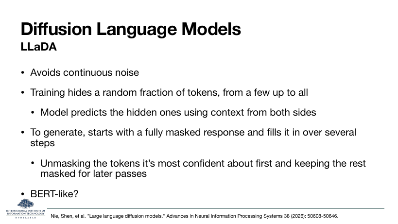
slide 42 · LLaDA in words, and is it just BERT?
On the slide
The same points as the figure, in words, ending with the question "BERT-like?"
So is it BERT?
The network is the same kind of thing, a bidirectional transformer with an output softmax at every
position, trained to predict masked tokens. Two differences make it a generative model.
- The masking ratio. BERT always masks about 15%, so it has never seen a sentence
that is 100% masked and cannot start from nothing. LLaDA is trained on every ratio from 0 to 1,
including fully masked inputs, so it can run the whole path from blank to finished text.
- A probabilistic objective. The 1/t-weighted loss is a bound on the
log-likelihood, so LLaDA is a proper language model with a perplexity you can compare. BERT's fixed-ratio
loss is not.
For a short exam answer, say that LLaDA is BERT trained at all masking ratios with a likelihood-based
weighting, and used iteratively to generate.
Slide 43 / 59
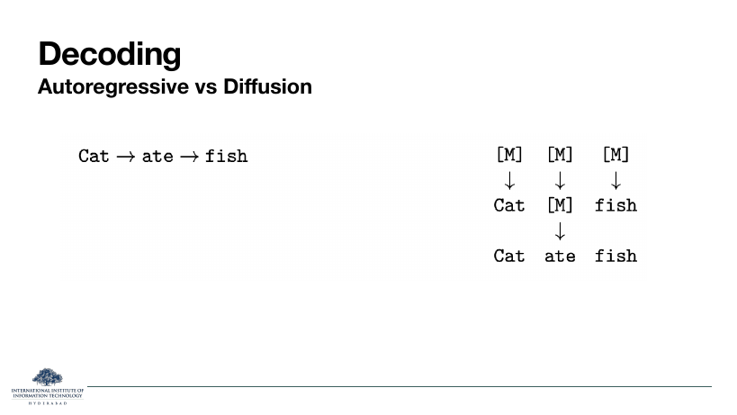
ate -> fish. Right: [M] [M] [M], first step gives Cat [M] fish, second step gives Cat ate fish.">
slide 43 · left-to-right vs fill-in
On the slide
An autoregressive model writes "Cat", then "ate", then "fish". The diffusion model starts from three
masks, fills in "Cat" and "fish" first, and then "ate".
Why that order is useful
Once both ends are known, the middle word is heavily constrained. It has to be something a cat does to a fish.
A left-to-right model choosing the second word has to guess without knowing the object. Diffusion
lets the model write the easy, informative tokens first and use them as context for the hard ones.
The order is not fixed in advance. It comes from the model's confidence.
Slide 44 / 59
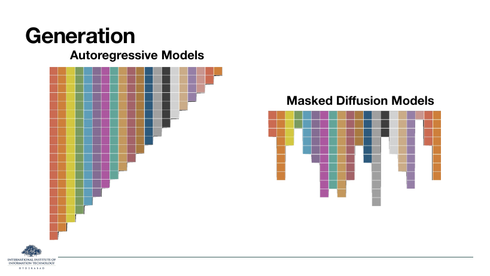
slide 44 · when each token gets decided
On the slide
Each column is one position in the output and time runs downwards. On the left (autoregressive) the
positions are finished strictly one after another, giving a triangle as tall as the sequence is long.
On the right (masked diffusion) positions all over the sequence get decided in the same steps, and
the whole picture is much shorter.
The height of each picture is the number of sequential forward passes. That is the speed argument
of the whole lecture in one image.
§7Mercury: diffusion at production speed
Mercury Coder from Inception Labs is a commercial diffusion LM
for code. The slides show its reported results, which are about the same
quality as small fast autoregressive models, at many times the
throughput.
Slide 45 / 59
![Diffusion Language Models: Mercury. Scatter plot, Coding Index vs Output Speed: Smaller models, from Artificial Analysis. X axis output speed in tokens per second from 0 to 1200; y axis coding index. Most attractive quadrant shaded green top right. Claude 3.5 Haiku, Codestral, Mistral Small 3, GPT-4o mini and Gemini 2.0 Flash-Lite are at high quality but under about 250 tokens per second. DeepSeek Coder V2 Lite, Llama 3.1 8B, Nova Micro, Qwen2.5 Coder 7B, Command-R+ are lower. Mercury Coder Small sits at about 740 tokens per second in the attractive quadrant, Mercury Coder Mini at about 1100 tokens per second. Caption: Mercury Coder models outperform other frontier models by up to 10x in throughput while maintaining comparable quality.](../assets/slides/L16-diffusion-lms/slide-45.png)
slide 45 · quality vs speed
On the slide
A third-party chart of coding quality against output speed. All the autoregressive models are
stuck below roughly 250 tokens per second. Mercury Coder Small reaches about 740 and Mercury Coder
Mini about 1100, at quality comparable to the fast autoregressive models.
Where the speed comes from
An autoregressive model's speed is capped by one forward pass per token (slide 11). Mercury fills in
many tokens per forward pass, as in the LLaDA example, so it can produce more tokens per second on the
same GPU even if each pass is a bit more expensive.
Slide 46 / 59
![Mercury Table 1: Performance (pass@1) comparison of various models across coding benchmarks: HumanEval, MBPP, EvalPlus, MultiPL-E, LCB, BCB, Speed. Open-weights: Llama 3.1 8B Instruct 66.5, 59.2, 60.2, 50.1, 12.0, 32.3, 153; DeepSeek Coder V2 Lite 79.0, 59.8, 68.3, 57.0, 16.0, 44.4, 93; Mistral Small 3 84.8, 69.6, 72.3, 70.1, 25.0, 42.7, 126; Qwen 2.5 Coder 7B Instruct 88.0, 80.0, 79.3, 75.3, 9.0, 41.4, 195. Frontier speed-optimized: Nova Micro 79.3, 65.4, 72.1, 56.7, 14.0, -, 148; Codestral 2501 85.0, 72.2, 75.6, 73.4, 24.0, 46.1, 171; GPT 4o Mini 88.0, 74.6, 78.5, 72.0, 23.0, 46.8, 59; Claude 3.5 Haiku 86.0, 78.0, 75.1, 72.3, 31.0, 45.4, 61; Gemini 2.0 Flash Lite 90.0, 75.0, 77.3, 79.5, 18.0, 44.4, 201. Frontier: DeepSeek V3 92.1, 81.0, 82.1, 79.1, 36.0, 50.0, 27; Claude 3.5 Sonnet 90.2, 81.2, 77.3, 81.9, 38.0, 44.8, 76; GPT 4o 90.2, 82.2, 82.4, 77.6, 31.0, 49.9, 61. Our models: Mercury Coder Mini 88.0, 77.1, 78.6, 74.1, 17.0, 42.0, 1109; Mercury Coder Small 90.0, 76.6, 80.4, 76.2, 25.0, 45.5, 737.](../assets/slides/L16-diffusion-lms/slide-46.png)
slide 46 · coding benchmarks and speed
On the slide
pass@1 scores on six coding benchmarks plus output speed in tokens per second, for open models,
speed-optimized frontier models, frontier models and the two Mercury models.
How to read it
- Like for like. GPT-4o Mini scores 88.0 on HumanEval at 59 tokens/s. Mercury Coder
Mini also scores 88.0, at 1109 tokens/s, about 19× faster.
- Not a frontier model. On the harder LiveCodeBench (LCB) column Mercury Coder Mini
gets 17.0 and Small 25.0, against 36–38 for DeepSeek V3 and Claude 3.5 Sonnet. Mercury matches the
small fast models, not the largest ones.
- Small vs Mini. Small is better on most benchmarks and slower (737 vs 1109
tokens/s). It is the usual size-versus-speed trade-off.
pass@1 is the fraction of problems solved by the first program the model writes, with no
retries.
Slide 47 / 59
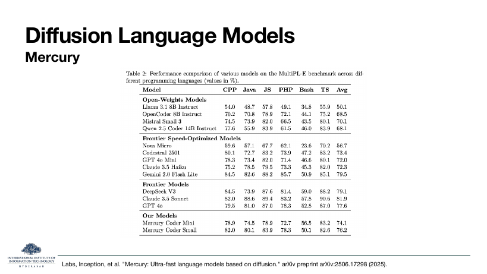
slide 47 · across programming languages
On the slide
The MultiPL-E benchmark split by language. Mercury Coder Small averages 76.2 and Mini 74.1, in the
same range as the speed-optimized autoregressive models. Bash is the weakest language for both
(50.1 and 56.5).
Slide 48 / 59

slide 48 · Copilot Arena
On the slide
In Copilot Arena, where developers pick between code completions in their editor, Mercury Coder
Mini has the lowest latency (0.25 s, rank 1) and is tied for second on Elo (993).
Why Copilot Arena is a good fit
Code completion in an editor is the use case where speed matters most. A suggestion that arrives
after 2 seconds is often ignored because the programmer has already typed past it. Mercury is about 8×
faster than the top-Elo model here (0.25 s vs 2.07 s) at nearly the same preference rating. Lecture 12
described Chatbot Arena, which turns pairwise human votes into an Elo-style rating, and Copilot
Arena works the same way inside the editor.
§8Diffusion vs autoregressive
A balanced look. Diffusion has real costs in training efficiency
and per-step expense, and its speed advantage depends on the
number of steps.
Slide 49 / 59
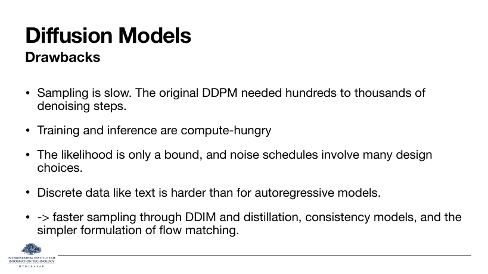
slide 49 · diffusion drawbacks
On the slide
Diffusion has its own problems. It needs many sampling steps and heavy compute, its likelihood is only
a bound, the noise schedule involves many design choices, and text is harder than images. The arrow lists the image-side
fixes for slow sampling (DDIM, distillation, consistency models, flow matching).
Why step count decides everything
The parallel advantage only pays off if the number of steps T is small. DDPM used 1000
steps for an image. If a text diffusion model needed 1000 steps to write 200 tokens, it would be five
times slower than autoregressive decoding. All the fixes on the arrow aim to get good samples
in fewer steps.
Slide 50 / 59
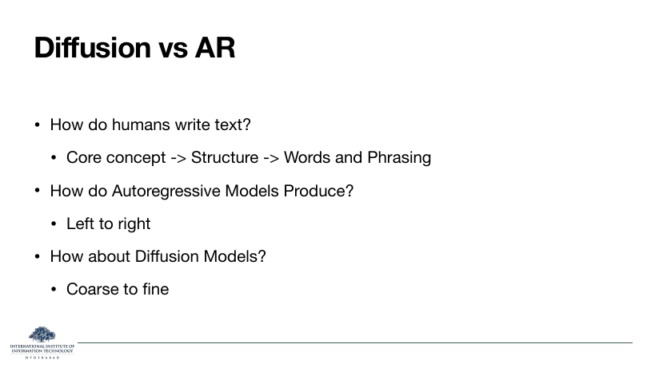
structure -> words and phrasing. How do autoregressive models produce? Left to right. How about diffusion models? Coarse to fine.">
slide 50 · how text gets written
On the slide
People write by going from an idea to a structure to the exact words. Autoregressive models go left
to right. Diffusion models go coarse to fine, which is closer to the human process.
In the LLaDA example on slide 41, the model fixed "The answer" and the full stop before the number.
It laid out the frame of the sentence first and filled in the detail last.
Slide 51 / 59
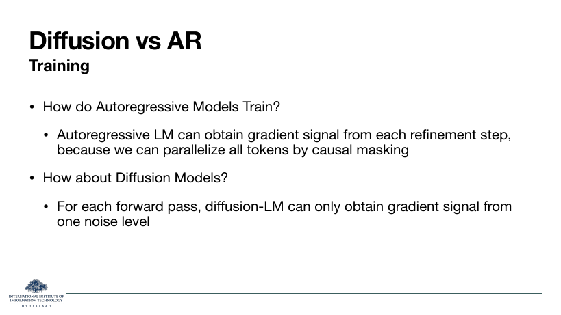
slide 51 · training signal per forward pass
On the slide
An autoregressive model gets a loss at every position from one forward pass. A diffusion model gets a
loss only at one noise level per forward pass.
Count the losses
Take a 1000-token training sequence.
- Autoregressive. Thanks to the causal mask (Lecture 2), one forward pass gives a
next-token loss at all 1000 positions. In effect it trains on all 1000 generation steps at once.
- Masked diffusion. One forward pass uses one random t. Loss is only on the
masked positions, on average t × 1000 = 500 of them. And it only teaches the model about
that one noise level, out of the whole range it will need at generation time.
So diffusion LMs need more training compute to reach the same quality. The LM1B gap in slide 40 (23.0
vs 20.9) is part of this cost.
Slide 52 / 59
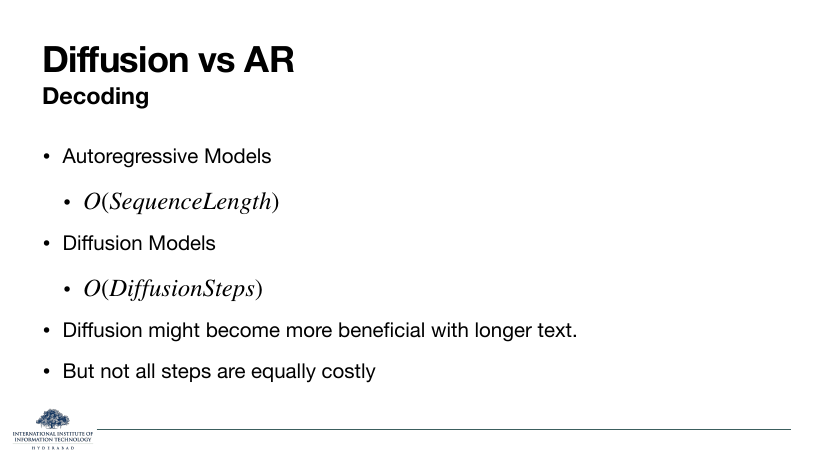
slide 52 · decoding cost
On the slide
Autoregressive decoding takes a number of passes equal to the sequence length. Diffusion takes a
number equal to the denoising steps. Longer text favours diffusion, but the steps do not cost the
same.
Why the steps are not equal
An autoregressive step, with a KV cache, processes only the one new token and reuses stored keys and
values for the rest (the KV cache from Lectures 5 and 6). A diffusion step uses bidirectional attention, so changing any token
can change every position's representation, and the simple version recomputes the whole sequence each
step. So for a 256-token answer in 64 steps, diffusion runs 4× fewer passes, but each pass processes
256 positions instead of 1. It can still win because, as Lecture 11 explained, a single-token pass
is limited by reading the weights from memory, and a 256-position pass reads the same weights once
while using far more of the GPU's arithmetic.
Slide 53 / 59
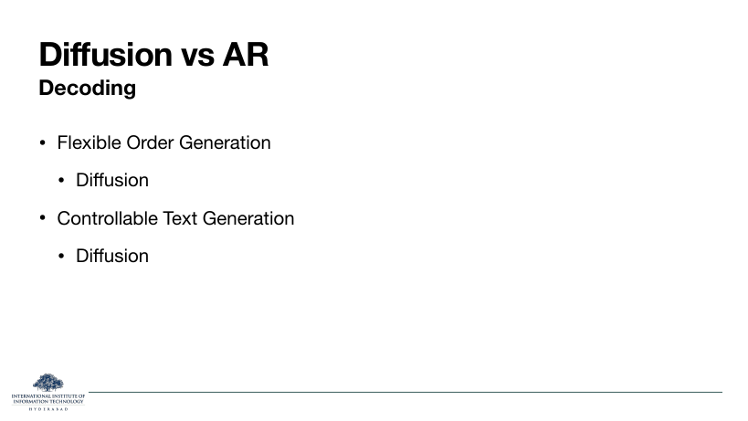
slide 53 · where diffusion clearly wins
On the slide
Diffusion has the edge in two decoding features, generating in any order and controlling the
whole output.
Both follow from the same fact. Every position exists from the first step and can see every other
position. That is what lets the model fill in the middle of a code template, honour a fixed length, or
be steered by a classifier as in slide 34.
§9Diffusion drafters: DFlash and DSpark
The last part uses diffusion differently. The final answer still
comes from a normal autoregressive model, and diffusion only
writes the draft in speculative decoding.
Slide 54 / 59
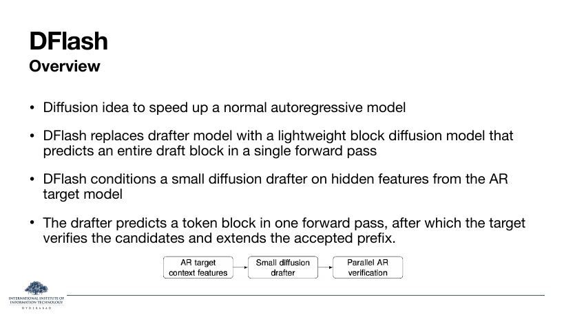
small diffusion drafter -> parallel AR verification.">
slide 54 · DFlash
On the slide
DFlash keeps speculative decoding from Lecture 11 but swaps the small autoregressive draft model for
a small diffusion model. The drafter produces a whole block of draft tokens in one forward pass, using
hidden features from the big target model, and the target verifies them as usual.
Why this helps speculative decoding
In Lecture 11 the draft model writes k tokens autoregressively, which costs k small
forward passes before the big model can verify. That drafting time is overhead. A diffusion drafter
starts from k masks and fills them all in one pass, so drafting costs one small pass whatever
k is. Because the target model still verifies every token with the accept/reject rule, the
output is exactly what the target would have produced. Diffusion only affects speed, not quality.
Why use the target's hidden features
A tiny model guessing several tokens at once has little to go on. The target model's hidden states
already encode what it "plans" to say next, so feeding them to the drafter makes its guesses agree
with the target much more often, and more drafted tokens get accepted.
Slide 55 / 59
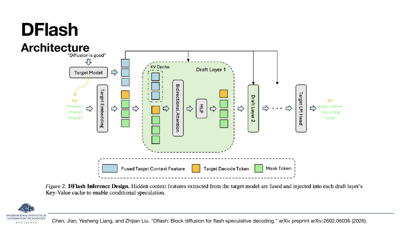
'. Hidden context features extracted from the target model are fused and injected into each draft layer's key-value cache to enable conditional speculation.">
slide 55 · DFlash architecture
On the slide
The prompt is "Diffusion is good". The target model produces the next token, "for". The drafter
takes "for" followed by several mask tokens and, in one pass through a few bidirectional layers,
fills the masks with "speculative decoding <eos>". The target's hidden features are placed in
each draft layer's KV cache, so every masked position can attend to them.
Tracing one round
- Target model reads "Diffusion is good" and emits "for", as in normal decoding.
- Drafter reads "for [M] [M] [M]" plus the target's features and fills all three masks in one pass with
"speculative decoding <eos>".
- Target verifies "for speculative decoding <eos>" in a single parallel pass and keeps the
longest prefix it agrees with (Lecture 11's rule).
The drafter reuses the target's embedding layer and LM head (the slide labels them "Target
Embedding" and "Target LM Head"), so it only needs to train a few small layers in the middle.
Slide 56 / 59
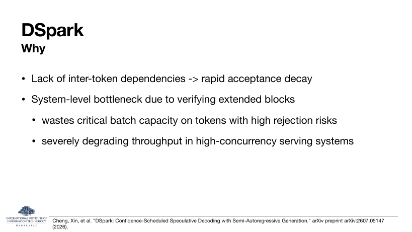
slide 56 · the problem with parallel drafts
On the slide
Two problems with drafting a whole block in parallel. Tokens drafted together do not depend on each
other, so acceptance drops off quickly along the block. And verifying long blocks that will mostly be
rejected wastes GPU capacity in a busy server.
Why acceptance decays
In one parallel pass, position 3 is predicted without knowing what was chosen at position 2. If
position 2 could be "New" or "Los" and position 3 is predicted separately, you can get "New Angeles".
The further along the block, the more such mismatches can stack up. And since the target accepts only
a prefix, one rejection throws away everything after it.
Why that hurts a server
A serving system batches many users' requests into each forward pass. Every draft token sent for
verification takes a slot in that batch. Draft tokens at the end of a long block are likely to be
rejected, so their slots are mostly wasted, and with many concurrent users those slots could have gone
to someone else's request.
Slide 57 / 59
slide 57 · DSpark's two fixes
On the slide
DSpark answers both problems. For the dependency problem, a heavy parallel backbone is followed by a
light sequential module that lets each draft token see the ones before it. For the wasted capacity, it
decides per request how many draft tokens are worth verifying, using its estimate of how likely each
prefix is to survive and how fast the serving engine is at each batch size.
"Prefix survival", with numbers
Suppose the drafter's confidences for four draft tokens are 0.9, 0.8, 0.6 and 0.2. A token is only
accepted if all tokens before it are, so the chance that the first k tokens all survive is a
running product.
| Prefix length | Survival probability |
|---|
| 1 | 0.9 |
| 2 | 0.9 × 0.8 = 0.72 |
| 3 | 0.72 × 0.6 = 0.432 |
| 4 | 0.432 × 0.2 ≈ 0.086 |
The expected number of accepted tokens is the sum, about 2.14. The fourth token adds only 0.086 to
that, yet it costs a full slot in the verification batch. Under heavy load the scheduler would drop
it and verify three, while on an idle server it might keep all four.
Slide 58 / 59
slide 58 · learning a reveal order
On the slide
Which token you reveal first changes how easy the rest become. DSpark uses known-correct responses to
search for reveal orders that cut uncertainty early, then trains the model on those orders. A KL
penalty keeps its predictions close to the original model's.
The link to earlier slides
This is the "Cat … fish, then ate" idea from slide 43, made systematic. Instead of trusting the
model's confidence to pick the order, DSpark looks for orders that are known to work on real answers
and teaches the model to follow them. The KL term is the same kind of anchor used in RLHF-style
fine-tuning. It stops the model from drifting far from what it knew, so it learns a better order
without forgetting the language.
Slide 59 / 59
![DSpark Architecture, Figure 1: the DSpark architecture and decoding cycle. Step 1: given prompt tokens A B C, the target model generates next token D, the anchor for drafting. Step 2: D and three Mask tokens go through a heavy parallel block producing logits, then a lightweight sequential block producing draft tokens E F G H with confidence scores c1 to c4. A hardware-aware prefix scheduler keeps E F G and drops H. Step 3: the target model verifies D E F G in parallel; E and F are accepted, G is rejected, and the target generates a corrected token G* to complete the round.](../assets/slides/L16-diffusion-lms/slide-59.png)
slide 59 · one DSpark round
On the slide
One round in three steps. (1) The target model reads "A B C" and produces "D". (2) The drafter takes
"D" and three masks, runs the parallel block and then the sequential block, and outputs "E F G H" with
confidences c1 to c4. The scheduler keeps "E F G" and drops
the low-confidence "H". (3) The target verifies, accepts "E" and "F", rejects "G" and replaces it with
its own token "G*".
What the round achieved
The target ran two forward passes (one to produce D, one to verify) and the output grew by four
tokens (D, E, F and G*). Plain autoregressive decoding would have needed four passes. Dropping H cost
nothing here, since it would have been thrown away anyway after G was rejected. That is the
scheduler doing its job.
→ Back to Lecture 11
The verification step, including generating a corrected token at the first rejection, is exactly
the speculative decoding algorithm from Lecture 11. DFlash and DSpark only change how the draft is
produced and how much of it is sent for checking.
Zoom out. Older generative models each had a weak spot (VAEs
blur, GANs fail on text, autoregressive models are slow and
cannot revise), and diffusion offered parallel, revisable,
controllable generation. For text the obstacle is that words
are discrete. Adding Gaussian noise to embeddings (Diffusion-LM)
works but suffers from rounding errors and needs many steps.
Corrupting the tokens themselves works better, and absorbing
[MASK] noise works best, because then a diffusion LM is a
masked language model trained at every masking ratio. MDLM
brought its perplexity close to autoregressive models, LLaDA
scaled it to a chat model that generates by filling in its
most confident masks first, and Mercury showed that this can
be many times faster in practice. The costs are weaker training
signal per pass and more expensive steps. Finally, DFlash and
DSpark keep an autoregressive model in charge and use a small
diffusion model only to draft blocks for speculative decoding.
For an exam, be able to run the absorbing [MASK] forward process
by hand, explain why masked diffusion is "BERT at all masking
ratios", trace a few LLaDA unmasking steps, and say why
parallel drafts lose acceptance along the block.